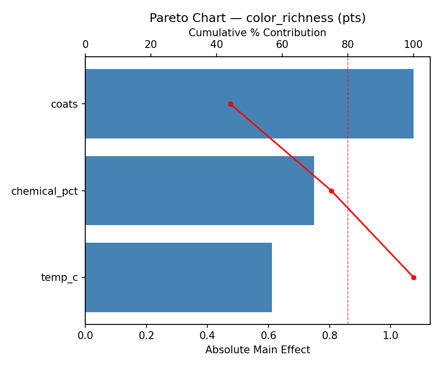
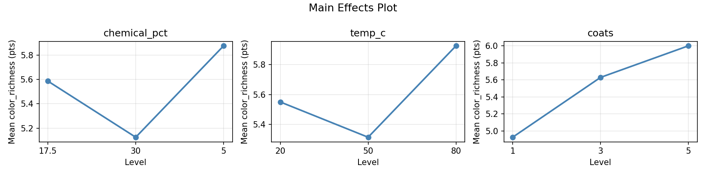
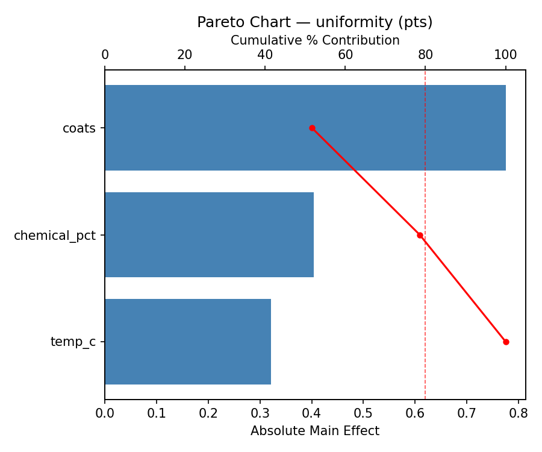
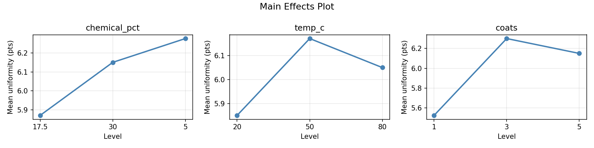
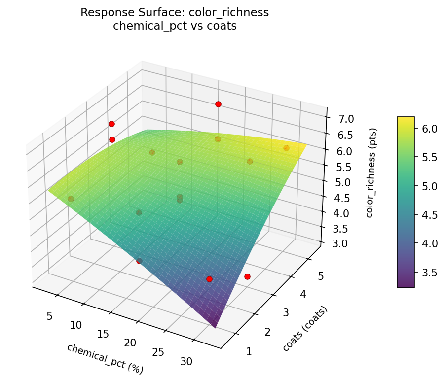
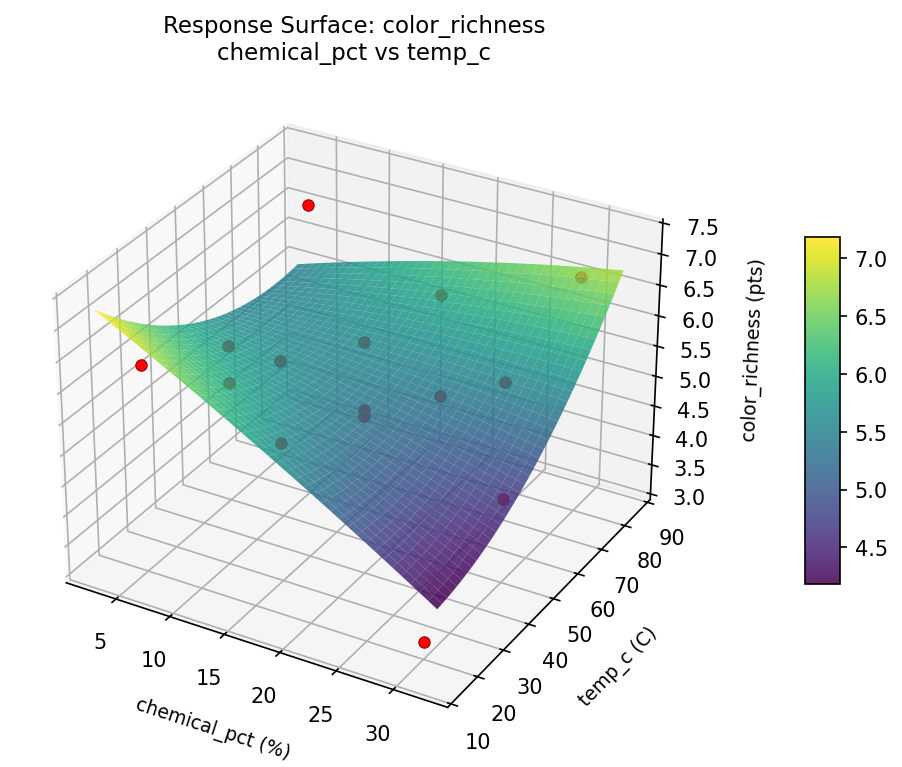
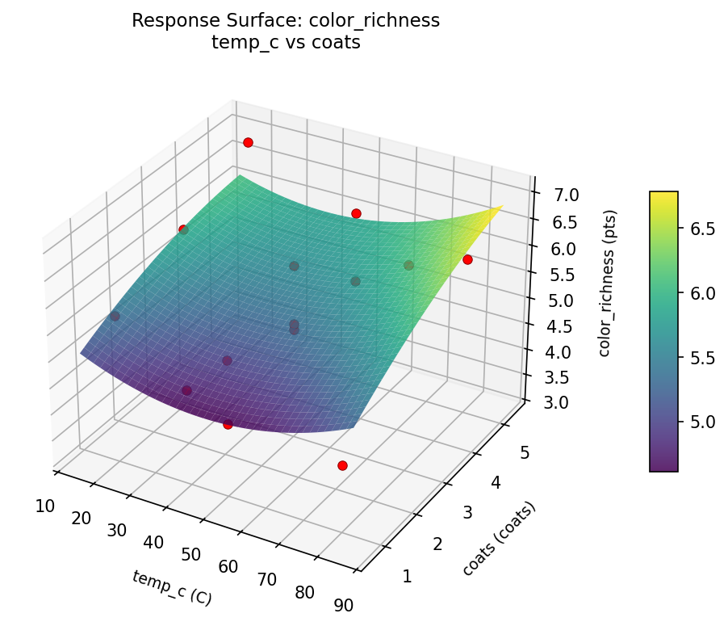
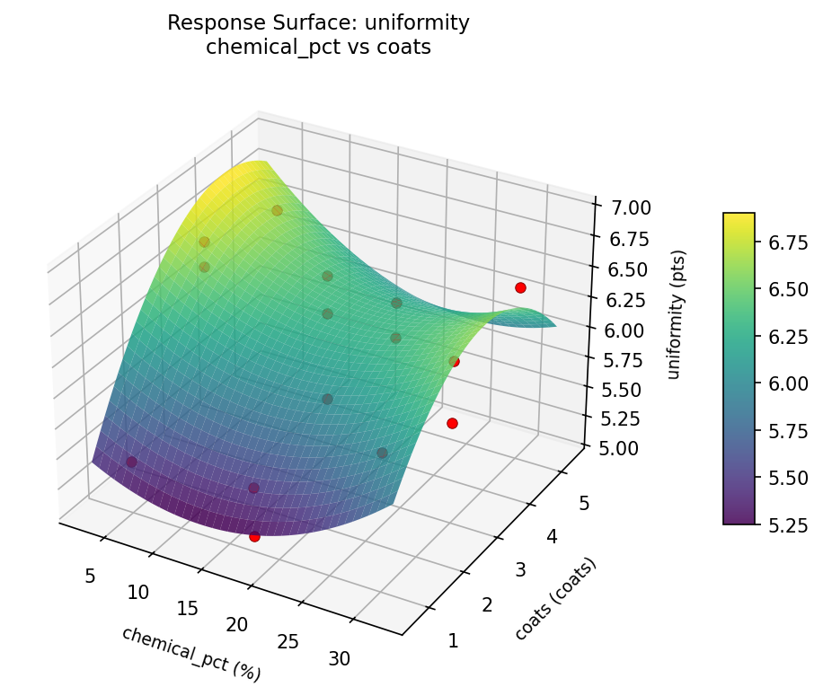
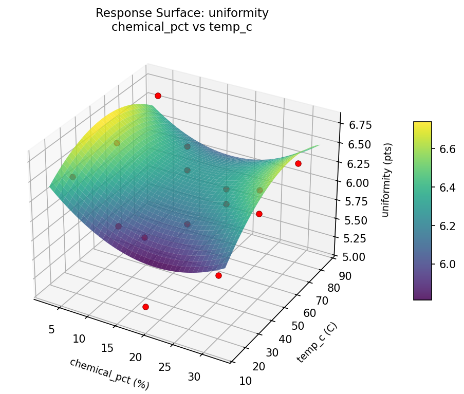
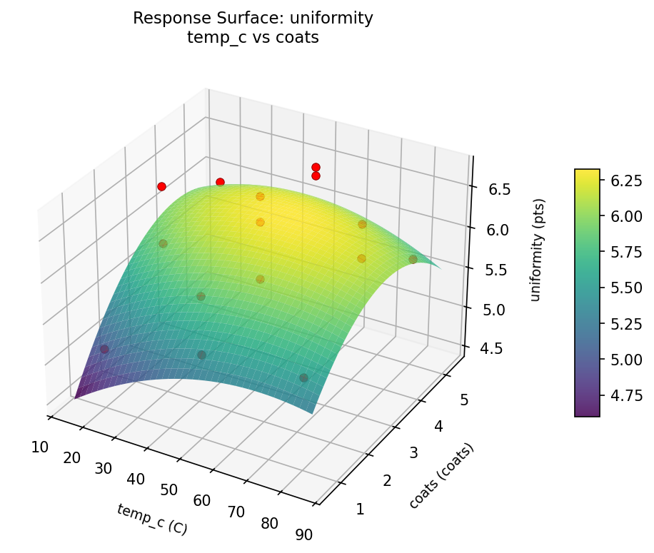

Summary
This experiment investigates bronze sculpture patina. Box-Behnken design to maximize color richness and uniformity by tuning chemical concentration, application temperature, and number of coats.
The design varies 3 factors: chemical pct (%), ranging from 5 to 30, temp c (C), ranging from 20 to 80, and coats (coats), ranging from 1 to 5. The goal is to optimize 2 responses: color richness (pts) (maximize) and uniformity (pts) (maximize). Fixed conditions held constant across all runs include chemical = liver_of_sulfur, metal = bronze.
A Box-Behnken design was chosen because it efficiently fits quadratic models with 3 continuous factors while avoiding extreme corner combinations — requiring only 15 runs instead of the 8 needed for a full factorial at two levels.
Quadratic response surface models were fitted to capture potential curvature and factor interactions. The RSM contour plots below visualize how pairs of factors jointly affect each response.
Key Findings
For color richness, the most influential factors were coats (44.1%), chemical pct (30.8%), temp c (25.1%). The best observed value was 7.0 (at chemical pct = 17.5, temp c = 50, coats = 3).
For uniformity, the most influential factors were coats (51.7%), chemical pct (26.9%), temp c (21.4%). The best observed value was 6.7 (at chemical pct = 30, temp c = 80, coats = 3).
Recommended Next Steps
- Run confirmation experiments at the predicted optimal settings to validate the model.
- Consider whether any fixed factors should be varied in a future study.
Experimental Setup
Factors
| Factor | Low | High | Unit |
|---|
chemical_pct | 5 | 30 | % |
temp_c | 20 | 80 | C |
coats | 1 | 5 | coats |
Fixed: chemical = liver_of_sulfur, metal = bronze
Responses
| Response | Direction | Unit |
|---|
color_richness | ↑ maximize | pts |
uniformity | ↑ maximize | pts |
Configuration
{
"metadata": {
"name": "Bronze Sculpture Patina",
"description": "Box-Behnken design to maximize color richness and uniformity by tuning chemical concentration, application temperature, and number of coats"
},
"factors": [
{
"name": "chemical_pct",
"levels": [
"5",
"30"
],
"type": "continuous",
"unit": "%"
},
{
"name": "temp_c",
"levels": [
"20",
"80"
],
"type": "continuous",
"unit": "C"
},
{
"name": "coats",
"levels": [
"1",
"5"
],
"type": "continuous",
"unit": "coats"
}
],
"fixed_factors": {
"chemical": "liver_of_sulfur",
"metal": "bronze"
},
"responses": [
{
"name": "color_richness",
"optimize": "maximize",
"unit": "pts"
},
{
"name": "uniformity",
"optimize": "maximize",
"unit": "pts"
}
],
"settings": {
"operation": "box_behnken",
"test_script": "use_cases/289_sculpture_patina/sim.sh"
}
}
Experimental Matrix
The Box-Behnken Design produces 15 runs. Each row is one experiment with specific factor settings.
| Run | chemical_pct | temp_c | coats |
|---|
| 1 | 17.5 | 20 | 1 |
| 2 | 17.5 | 50 | 3 |
| 3 | 30 | 50 | 5 |
| 4 | 30 | 50 | 1 |
| 5 | 17.5 | 50 | 3 |
| 6 | 17.5 | 50 | 3 |
| 7 | 5 | 50 | 5 |
| 8 | 30 | 20 | 3 |
| 9 | 17.5 | 20 | 5 |
| 10 | 30 | 80 | 3 |
| 11 | 5 | 50 | 1 |
| 12 | 17.5 | 80 | 5 |
| 13 | 5 | 20 | 3 |
| 14 | 5 | 80 | 3 |
| 15 | 17.5 | 80 | 1 |
Step-by-Step Workflow
1
Preview the design
$ python doe.py info --config use_cases/289_sculpture_patina/config.json
2
Generate the runner script
$ python doe.py generate --config use_cases/289_sculpture_patina/config.json \
--output use_cases/289_sculpture_patina/results/run.sh --seed 42
3
Execute the experiments
$ bash use_cases/289_sculpture_patina/results/run.sh
4
Analyze results
$ python doe.py analyze --config use_cases/289_sculpture_patina/config.json
5
Get optimization recommendations
$ python doe.py optimize --config use_cases/289_sculpture_patina/config.json
6
Generate the HTML report
$ python doe.py report --config use_cases/289_sculpture_patina/config.json \
--output use_cases/289_sculpture_patina/results/report.html
Features Exercised
| Feature | Value |
|---|
| Design type | box_behnken |
| Factor types | continuous (all 3) |
| Arg style | double-dash |
| Responses | 2 (color_richness ↑, uniformity ↑) |
| Total runs | 15 |
Analysis Results
Generated from actual experiment runs using the DOE Helper Tool.
Response: color_richness
Top factors: coats (44.1%), chemical_pct (30.8%), temp_c (25.1%).
Pareto Chart

Main Effects Plot

Response: uniformity
Top factors: coats (51.7%), chemical_pct (26.9%), temp_c (21.4%).
Pareto Chart

Main Effects Plot

Response Surface Plots
3D surfaces fitted with quadratic RSM. Red dots are observed data points.
color richness chemical pct vs coats

color richness chemical pct vs temp c

color richness temp c vs coats

uniformity chemical pct vs coats

uniformity chemical pct vs temp c

uniformity temp c vs coats

Full Analysis Output
RSM surface: rsm_color_richness_chemical_pct_vs_temp_c.png
RSM surface: rsm_color_richness_chemical_pct_vs_coats.png
RSM surface: rsm_color_richness_temp_c_vs_coats.png
RSM surface: rsm_uniformity_chemical_pct_vs_temp_c.png
RSM surface: rsm_uniformity_chemical_pct_vs_coats.png
RSM surface: rsm_uniformity_temp_c_vs_coats.png
=== Main Effects: color_richness ===
Factor Effect Std Error % Contribution
--------------------------------------------------------------
coats 1.0750 0.2813 44.1%
chemical_pct 0.7500 0.2813 30.8%
temp_c 0.6107 0.2813 25.1%
=== Summary Statistics: color_richness ===
chemical_pct:
Level N Mean Std Min Max
------------------------------------------------------------
17.5 7 5.5857 0.9118 4.2000 7.0000
30 4 5.1250 1.6681 3.2000 6.8000
5 4 5.8750 0.8421 4.9000 6.8000
temp_c:
Level N Mean Std Min Max
------------------------------------------------------------
20 4 5.5500 1.6543 3.2000 7.0000
50 7 5.3143 0.7010 4.3000 6.2000
80 4 5.9250 1.2258 4.2000 6.8000
coats:
Level N Mean Std Min Max
------------------------------------------------------------
1 4 4.9250 0.7848 4.2000 5.7000
3 7 5.6286 1.2971 3.2000 6.8000
5 4 6.0000 0.8679 4.9000 7.0000
=== Main Effects: uniformity ===
Factor Effect Std Error % Contribution
--------------------------------------------------------------
coats 0.7750 0.1291 51.7%
chemical_pct 0.4036 0.1291 26.9%
temp_c 0.3214 0.1291 21.4%
=== Summary Statistics: uniformity ===
chemical_pct:
Level N Mean Std Min Max
------------------------------------------------------------
17.5 7 5.8714 0.5438 5.1000 6.7000
30 4 6.1500 0.2646 5.8000 6.4000
5 4 6.2750 0.5909 5.4000 6.7000
temp_c:
Level N Mean Std Min Max
------------------------------------------------------------
20 4 5.8500 0.5802 5.1000 6.5000
50 7 6.1714 0.4680 5.4000 6.7000
80 4 6.0500 0.5508 5.5000 6.7000
coats:
Level N Mean Std Min Max
------------------------------------------------------------
1 4 5.5250 0.4193 5.1000 6.1000
3 7 6.3000 0.4041 5.7000 6.7000
5 4 6.1500 0.3697 5.7000 6.5000
Pareto chart (color_richness): use_cases/289_sculpture_patina/results/analysis/pareto_color_richness.png
Pareto chart (uniformity): use_cases/289_sculpture_patina/results/analysis/pareto_uniformity.png
Main effects (color_richness): use_cases/289_sculpture_patina/results/analysis/main_effects_color_richness.png
Main effects (uniformity): use_cases/289_sculpture_patina/results/analysis/main_effects_uniformity.png
Optimization Recommendations
=== Optimization: color_richness ===
Direction: maximize
Best observed run: #10
chemical_pct = 17.5
temp_c = 50
coats = 3
Value: 7.0
RSM Model (linear, R² = 0.0918, Adj R² = -0.1559):
Coefficients:
intercept +5.5400
chemical_pct +0.2500
temp_c -0.0750
coats -0.3500
RSM Model (quadratic, R² = 0.4564, Adj R² = -0.5219):
Coefficients:
intercept +5.3667
chemical_pct +0.2500
temp_c -0.0750
coats -0.3500
chemical_pct*temp_c +0.3500
chemical_pct*coats +0.1500
temp_c*coats +0.4000
chemical_pct^2 -0.2583
temp_c^2 -0.4083
coats^2 +0.9917
Curvature analysis:
coats coef=+0.9917 convex (has a minimum)
temp_c coef=-0.4083 concave (has a maximum)
chemical_pct coef=-0.2583 concave (has a maximum)
Notable interactions:
temp_c*coats coef=+0.4000 (synergistic)
chemical_pct*temp_c coef=+0.3500 (synergistic)
Predicted optimum (from linear model):
chemical_pct = 30
temp_c = 50
coats = 1
Predicted value: 6.1400
Model quality: Weak fit — consider adding center points or using a different design.
Factor importance:
1. coats (effect: 1.4, contribution: 56.1%)
2. chemical_pct (effect: 0.5, contribution: 22.2%)
3. temp_c (effect: 0.5, contribution: 21.6%)
=== Optimization: uniformity ===
Direction: maximize
Best observed run: #7
chemical_pct = 30
temp_c = 80
coats = 3
Value: 6.7
RSM Model (linear, R² = 0.0843, Adj R² = -0.1654):
Coefficients:
intercept +6.0533
chemical_pct -0.0750
temp_c +0.1750
coats +0.0250
RSM Model (quadratic, R² = 0.4296, Adj R² = -0.5972):
Coefficients:
intercept +6.0000
chemical_pct -0.0750
temp_c +0.1750
coats +0.0250
chemical_pct*temp_c +0.3000
chemical_pct*coats +0.3500
temp_c*coats -0.2000
chemical_pct^2 -0.1000
temp_c^2 -0.0000
coats^2 +0.2000
Curvature analysis:
coats coef=+0.2000 convex (has a minimum)
chemical_pct coef=-0.1000 concave (has a maximum)
temp_c coef=-0.0000 negligible curvature
Notable interactions:
chemical_pct*coats coef=+0.3500 (synergistic)
Predicted optimum (from linear model):
chemical_pct = 5
temp_c = 80
coats = 3
Predicted value: 6.3033
Model quality: Weak fit — consider adding center points or using a different design.
Factor importance:
1. temp_c (effect: 0.3, contribution: 45.4%)
2. coats (effect: 0.2, contribution: 30.1%)
3. chemical_pct (effect: 0.2, contribution: 24.5%)